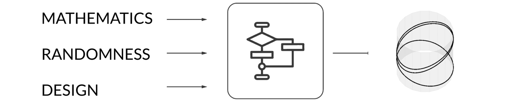
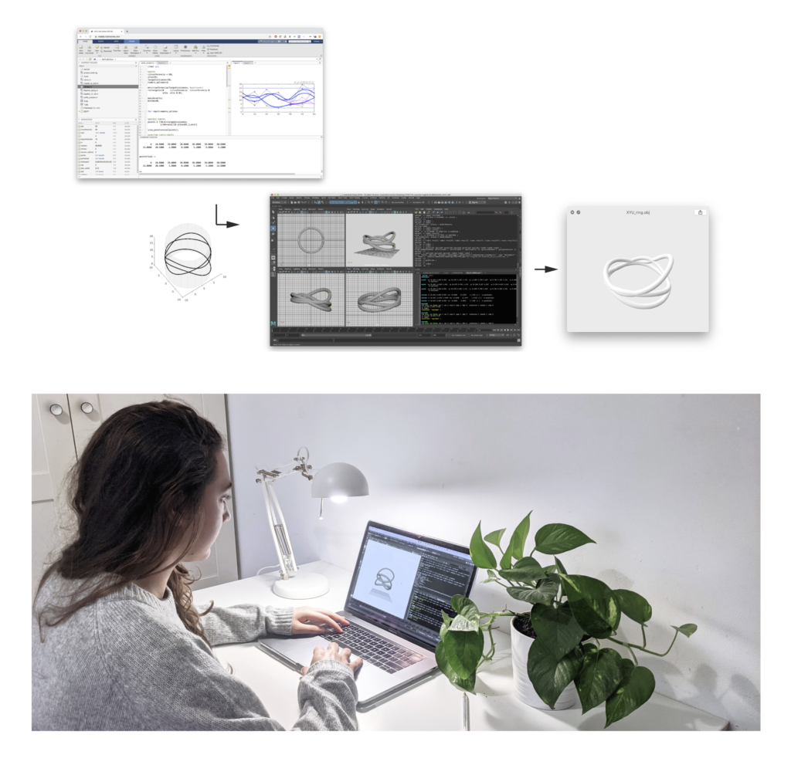
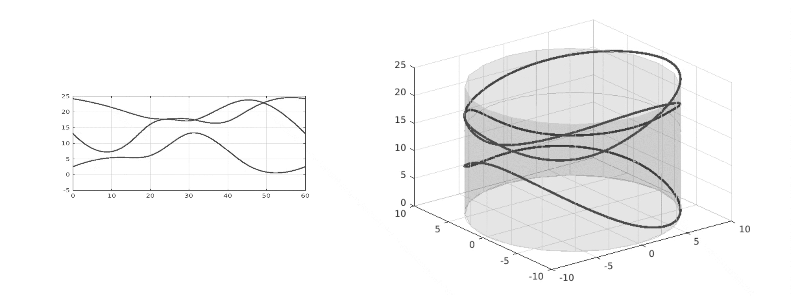
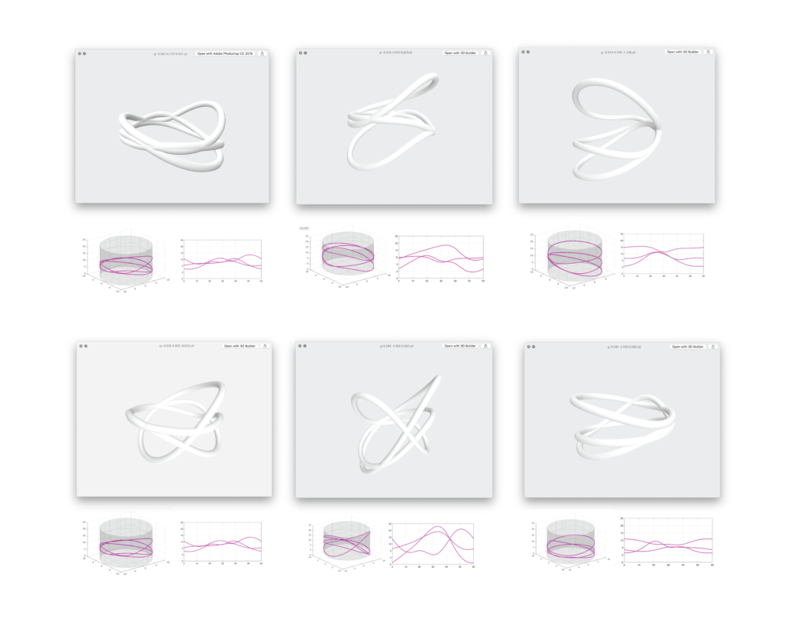

XYU ring
WHEN? Fall 2020
WHO? Tomás Cabezón
WHY? Final Degree Thesis
WHERE? TU Madrid
Inspiration can be quite a tricky topic, cause I do believe every single random encounter I have had in my life has led me to this unique position that I am right now, writing to you about what it means to design, to do maths and to integrate both.
There are infinite possibilities and universes in which this decision did not happen at all, as well as I am sure there are many others in which it also occurred. But if I had to point down a single event it would probably be how I realized AI was quickly taking over designers’ jobs, creating ads, banners… So I thought, how will designers face this new world where thousands of variants can be created with only one click?
Math can be the answer to this, the one that gives the input to generate these infinite possibilities if we integrate algorithms with the power of randomness. If creativity is imagining the impossible, why not have the infinite as the starting point?
XYU ring is not only an item but an infinite. This is not just a jewel, but as many as you want. This is not just a ring, it is an algorithm that designs them.

  
Every piece is unique, and made for the person.Once the rings are generated by the algorithm, they are 3d printed and casted by the jewell and sent to the customer.
You can get more info about the project, or even make your own ring at: